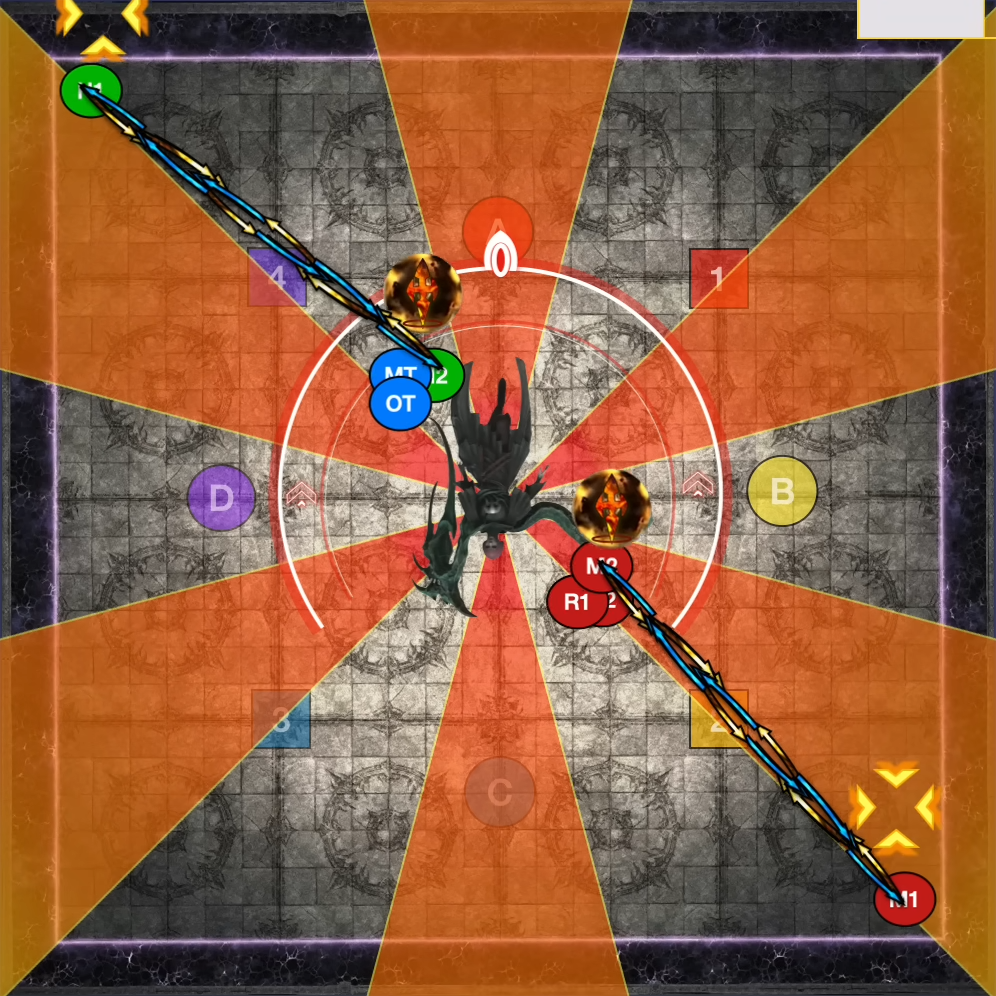

Abyssos: The Sixth Circle (Savage) is a high-end duty added in patch 6.21: Buried Memory. The fight can be unlocked by speaking to Nemjiji in Labyrinthos (8.4, 27.4) after completing Abyssos: The Eighth Circle.
The minimum ilvl required to enter this fight is 610.
After a Chelic Synergy tankbuster, Hegemone will cast Aetheric Polyominoid and place some + tiles on the floor. Then, she will use Unholy Darkness and telegraph light party stacks. Finally, she will do an Exocleaver that resolves right before the light party stack goes off. Have light party 1 go West and light party 2 go East and stand in safe columns (not in-line with the + tiles). After the first conal cleave, move into it to dodge the follow-up cleave. The tiles detonate with the first set of cleaves, so you don't have to worry about them for the second set.
Hegemone will put Limit Cut dots over everyone's heads. When the cast finishes, she will do large cleaves on players in the order of one through eight. I prefer doing Diamond Limit Cut, which puts players one through four on the one through four markers, five and six East, and seven and eight West. After players get cleaved, go West or East to avoid upcoming cleaves. Players five through eight should wait East and West and move to their marker when their partner gets cleaved. Your partner is four minus your number. For example, number six should wait East, and when number two is cleaved, number six should go to the two marker and number two should dodge East to avoid cleaves.
Hegemone will do a role-based attack where one role takes four large AOEs and the other role takes one stack marker and three donut AOEs. Players will either have an orb (big AOE), a red hollow circle (donut AOE), or a stack marker. Some of these players' overhead icons may have a swap tether that points to someone of the opposite role type's overhead icon. If a player is tethered, it will always be to someone of the opposite role type. Designate intercard partners: T1 R1 NW, T2 R2 NE, H1 M1 SW, H2 M2 SE. You will either be going out to your corner or stacking near the center. She will also do a Choros Ixou. Pay attention to if she is pointing the two orbs in her hand either to her sides or in front of and behind her. Remember that she will cleave the sides that weren't cleaved shortly after the first attack.
Here is a video where supports go out to intercards and DPS stay in, and Hegemone cleaves North and South first.
After this, Hegemone will do a Synergy split tankbuster and a Hemitheos's Dark IV raidwide.
Hegemone will tether four players to her tentacle and four players to her wing and apply debuffs accordingly. When the debuff expires, players will be locked into place and either do a conal cleave in front of them (tentacle), or a conal cleave behind them (wing). Getting hit by tentacle cleaves inflicts a DoT, while getting hit by wing cleaves stuns players for a few seconds. She will also do a Choros Ixou that goes off while players are locked in. Be sure to position to the safe side of the arena. My preferred strat is to have everyone group SE, with the tentacle cleaves in front and the wing cleaves behind. This allows everyone to have uptime while not having to worry about facing their cleave out.
Hegemone will place + and X tiles on the floor, which will swap with each other. One of the four squares in the center of the arena will be safe. She will also cast Dark Dome, which will bait AOEs on everyone's position when the cast finishes, and detonate after a few seconds. All players should stack in the center of the arena to bait the AOEs, then move to the safe spot to avoid the + and X tiles. When tiles are being swapped like this, + and X tiles always swap. This means that going towards tiles that look unsafe before the swap is the right way to go (e.g. being intercardinal to an X tile pre-swap, since it will turn into a + later, which actually makes intercardinals safe).
The safe square is always the X tile that is two tiles away from another + or X. In the below example, the X in the top right part of the field won't work, since it is one tile away from another + or X.
Hegemone will place two orbs and two stack markers over four players' heads. They will always be swapped, so whoever starts with the stack should go out, and whoever has the orb should stack up. Because opposing role types are tethered together, we can't do light party stacks, as there's a chance that one group would have two fake stacks (real AOEs), meaning there'd only be two players left to stack up. Because of this, we need to do role stacks. Have the supports be NW and the DPS be SE. There will also be an Exocleaver, so be ready to move into the first cleave after your stack or spread resolves.
Hegemone will do another tankbuster followed by a raidwide. From here on, which tankbuster she uses will be random (either the split tankbuster Synergy, or the shared tankbuster Chelic Synergy). Be ready to mitigate or use your invulnerability appropriately.
Hegemone will place + and X tiles on the floor that swap, along with light party stacks. There will always be two safe squares among the center four squares, and they will always be along a diagonal. Have light party 1 take the North diagonal safe square, and light party 2 take the South diagonal safe square. Below are the two possible patterns. They can be flipped or mirrored such that the safe squares are NW and SE, but the pattern will be the same. As a general rule of thumb, one safe square is always adjacent to two + or X tiles. Once that safe square is identified, you know that the other square is diagonal to it.
Hegemone will bait spread AOEs on all players. She will also do a Choros Ixou. Go to your intercards (tanks and melees in, healers and ranged out) and wiggle from either her sides to her front / back, or vice versa to dodge the attack.
Hegemone will assign two debuffs to everyone, a purple debuff and a pink tentacle or green wing debuff.
When the purple debuff expires, a large spread AOE will go off and inflict a vuln. Being hit by two will cause instant death. The pink tentacle debuff drastically increases damage taken from Hegemone's tentacle attacks. The green wing debuff drastically increases damage taken from Hegemone's wing attacks. Hegemone will always face North during this mechanic, and wing attacks will hit West players and tentacle attacks will hit East players.
To resolve this, players should go to the opposite side of the tentacle / wing debuff to ensure that they don't take lethal damage. Tentacles go West and wings go East. Players should align themselves based on the timer of their purple debuff. From North to South: 20s, 8s, 12s, 16s. Make sure to spread far from other players, as the purple debuff detonating does a really big AOE.

After the 16s players detonate, Hegemone will cast Dual Predation. The two closest players (one on her East side and one on her West side) will be with with small tentacle and wing AOEs. She will do this four times total. These must be taken in a specific order, as the players who recently detonated their debuff still have a vuln, meaning that Dual Predation would instantly kill them. The order they should be taken is based on the timer of their purple debuff: 20s, 8s, 12s, 16s. The 20s players should be the closest players on their side, usually touching or inside the hitbox. After they are hit with Dual Predation, they should move out to safely detonate their purple debuff. Then, 8s players should move in, get hit, move out. Repeat for 12s and 16s.
After every debuff expires and all eight Dual Predation attacks go out, she will do Ptera Ixou, an attack that cleaves both halves of the room with a wing and tentacle cleave. Players should swap sides from the ones they started on, as Dual Predation made them weak to the opposite attack type. Players have plenty of time to switch sides.
Here is a video of all of that in action. If you're using markers designed for Cachexia, you can stand around them without having to think too much. Just be mindful of the players around you.
After all that is done, Hegemone will do a random tankbuster followed by a raidwide.
Hegemone will place two X tiles on a diagonal in the center four squares. She then will cast Dark Sphere, which does spread AOEs on all players. Regardless of which way the X tiles are oriented, there should be two safe squares in each quadrant, so have players group up in intercard partners and space out appropriately. Finally, she will use Dark Dome, which resolves after the tiles and spreads go off. Simply dodge into a previously unsafe tile to avoid the baited AOEs. Either unoccupied tiles or the tiles that had the X in them will ensure no Dark Dome AOEs will be there.
This is the same as Exchange of Agonies 1, except the opposite role will be going in or out. If the supports had to be far in their corners for Exchange of Agonies 1, they will group up in the center for this attack.
Hegemone will place down + and X tiles and tether two of them together, indicating a swap. Two spots will dodge the tiles, but with the addition of Choros Ixou, it gets cut down to one safe spot that avoids all mechanics. Identify the two possible safe spots, wait for her to telegraph her Choros Ixou, then dodge accordingly.
She will follow up with another random tankbuster and a raidwide.
Her final big wall ties in several mechanics shown thus far.
You can use tank LB3 as soon as Ptera Ixou begins casting to ignore most of this mechanic. Players should still be in safe tiles to avoid Damage Downs, and they should still face their Transmission out to avoid getting a DoT or stunned.
Here is a video of all of that happening. In this example, there were two X tiles in the center, so the party positioned relative to the X being swapped. When the stacks and spreads appeared, the spread players moved two tiles North to be in the other safe spot. It is important not to cross sides East or West when moving the spread away, as players will take excess damage due to their debuff if they switch sides.
Hegemone will place + and X tiles on the floor that will not swap. Group up in the center to bait Dark Dome AOEs, then move to the tile in the center four squares that's safe. The safe spot is intercardinal to a + but not in the path of any other + or X tile. Here is an example below.
Hegemone will spawn two + tiles similar to the first Aetheric Polyominoid. She will also do a Choros Ixou, so dodge accordingly.
Finally, Hegemone will do a random tankbuster followed by a raidwide. Then she will slowcast one last raidwide, serving as enrage.